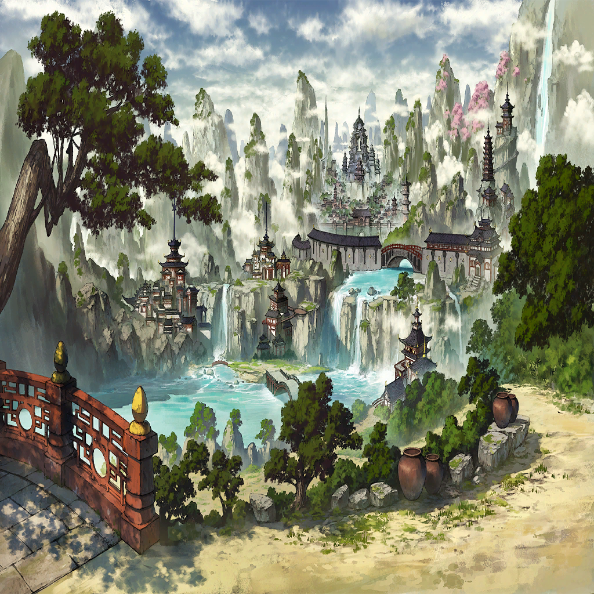

|
|  |

アマネ |
く…最後の抵抗というわけか…！
傷をつけるどころか、
近づけもしないとは…！ |

ディオス |
諦めるな…！ 必ず突破口は開けるはずだ！
ヴェルミオの命が尽きる前に、必ず…
…!? |
| 強欲の化身 |
―――――――― |
ディオス |
そうか…ルイも戦っているんだったな
誰ひとり諦めてなんかいない |
ディオス |
ルイとマンモンを切り離し
ルイを取り戻すぞ！ |
ディオス |
共に、戦おう
そしてこの騒動にピリオドを |
 |
| 強欲の化身 |
――――――――！ |
| ルイ |
…やはり、簡単に倒れてはくれないか |
| 強欲の化身 |
―――――――― |
| ルイ |
不思議か？
貴方よりも弱い俺が、こうして
まだここに立ち… |
| ルイ |
貴方を追い詰めている事実が |
| ルイ |
俺はひとりじゃない…
だからこそ為せることがある
それを貴方に示してみせる |
| ルイ |
俺は…負けてやるつもりなどない…！ |
| 強欲の化身 |
―――――――― |
| 強欲の化身 |
―――――――― |
| ルイ |
この傷は…槍によるもの…
まさか…シャンディ…!? |
| ルイ |
…貴方も戦っていたんだな…
あんな状態になってまで… |
| ルイ |
ならば俺も負けてはいられない…！
ここで、終わらせてみせる…！ |
| 強欲の化身 |
――――――――…！ |
| ルイ |
新たな一歩は、今までと逆がいい
貴方が弱肉強食を掲げるのなら
弱くとも、生きていける国として |
| 強欲の化身 |
――――――!? |
| ルイ |
『奪う国』ではなく『与える』国として
俺の“弱さ”で貴方を超えるとは
きっとそう言うことだから |
| ルイ |
奪うことで強欲の罪が溜まるのなら
与えることで国を作ろう
奪わず、支え合って |
| ルイ |
罪を認め、それを改める
それが、貴方と対峙し、すべてを知った上で
出した俺の答えだ |
| ルイ |
マンモンもまた、その一歩を承認した
だから俺に力を貸してくれている |
| ルイ |
奪わずに、与えることで |
| 強欲の化身 |
―――――――― |
| ルイ |
さあ、新たな始まりの時だ |